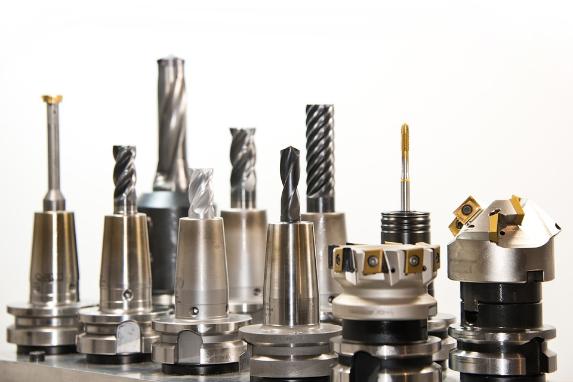

Con este sistema es posible encontrar cual taller es más funcional cuando se necesita de una revision, no importa si es correctiva o preventiva, los talleres pueden obtener una valoración por los usuarios que utilizan la plataforma, y de esta manera se puede hacer una mejor eleccion.

Repuestos
En nuestro sistema encontrarás los repuestos necesarios para el trabajo que estás haciendo, nuestros usuarios pueden ingresar sus productos, contamos con ventas de repuestos que tienen una larga lista de productos los cuales creemos que puedes necesitar en algun momento.